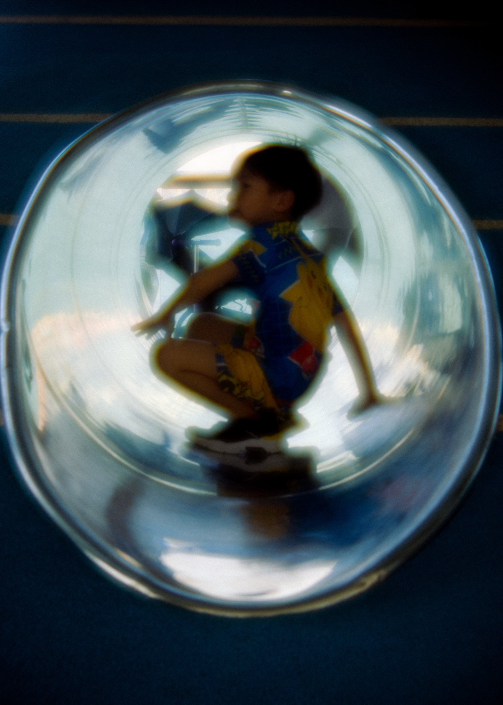

Charmaine Wong
Home
Work
About
Work
Food & Spaces
Ambience, interiors, detail, and dishes.

People
Observed, editorial, and quietly expressive portraits.
 Food & Spaces
Ambience, interiors, detail, and dishes.
Food & Spaces
Ambience, interiors, detail, and dishes.